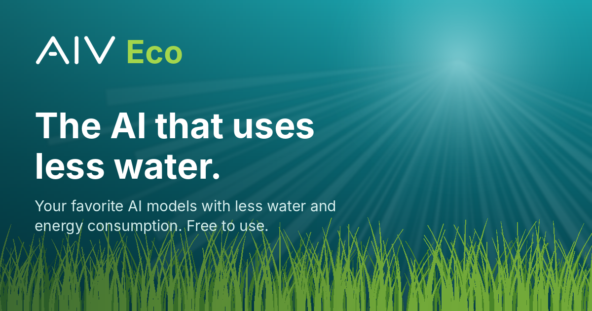

The AI that uses less water
AIV Eco is AI Verse's eco-friendly AI assistant. It does everyday AI work with less computing, so each answer uses less energy and less water, and it shows you the estimated environmental impact of every answer.
Eco-friendly AI assistant
AIV Eco is the eco-friendly AI assistant built to use less water and energy. It skips unnecessary AI work and shows the estimated water usage of every answer. Free.
AI water usage explained
Why AI uses water, how much a single AI prompt may use, and practical ways to reduce AI's water usage, including the eco-friendly AI assistant AIV Eco.
Green AI solutions
AIV Eco is a green AI solution for people, students, and teams who want sustainable AI: lower water usage and energy per task, with the environmental impact shown on every answer.
AI energy and water tracker
See the environmental impact of your AI use. AIV Eco shows estimated energy and water usage on every answer and tracks how much water and energy you've saved.
ChatGPT, Claude and Gemini with less water
Bring your own ChatGPT, Claude, Gemini, or Groq API key to AIV Eco and use your favorite AI models with less water and energy consumption.
Try the AI that uses less water
Free to use. Send 10 messages without an account, or sign up free for 20 messages a day.
Open AIV Eco